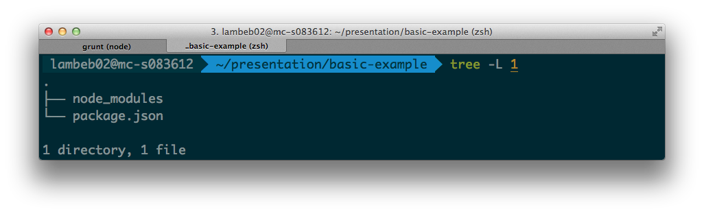
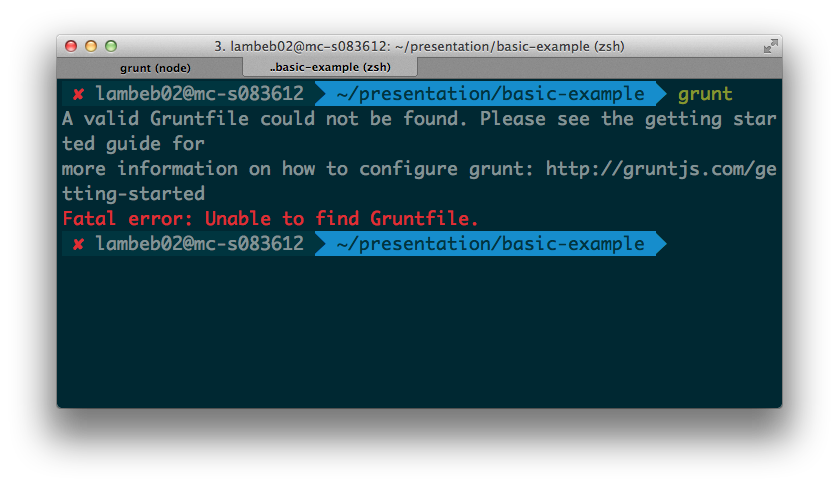
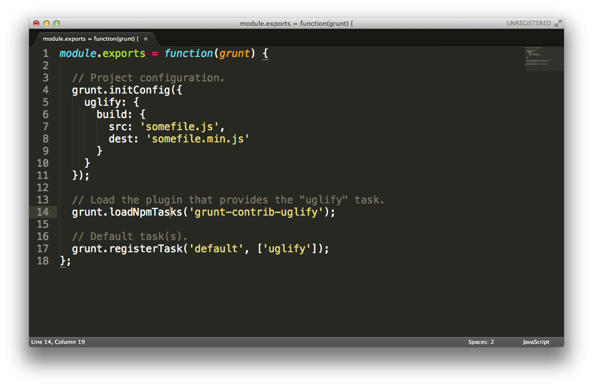
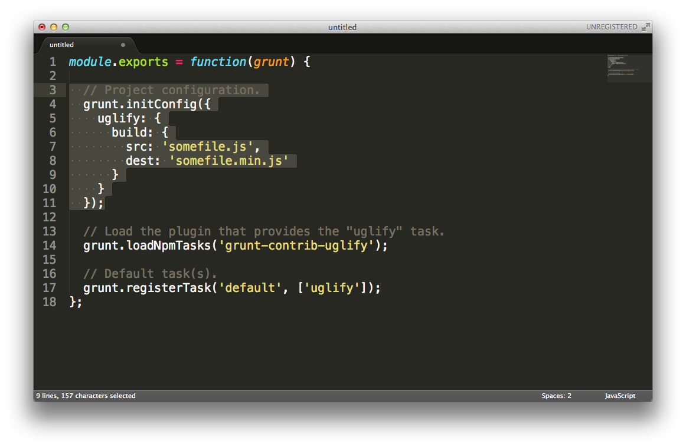
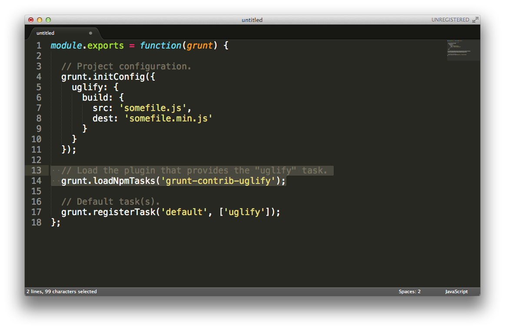
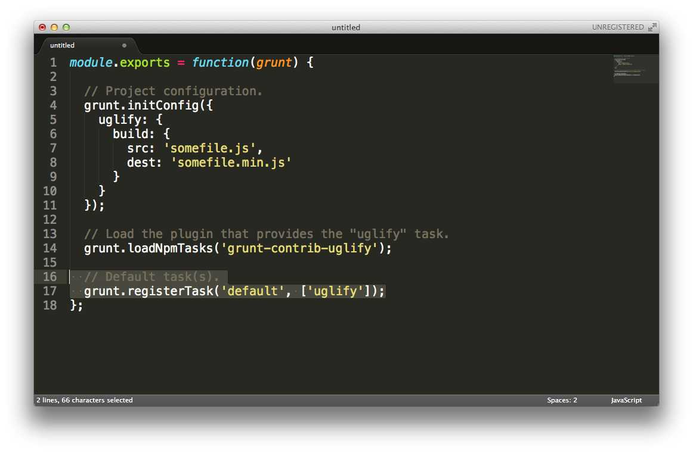

So what is Grunt?
It is...
- Task-based command line tool
- Built on top of Node.js
- Easy to extend
Why use Grunt?
- Configuration over scripting
- A large amount of plugins
- Your development aide
Ok.. so what can it do?
- Compile SASS
- Uglify
- Concatenate
- Run unit tests
- Run cucumbers
- So much more...
What does it look like?
Awesome. What do I need?
Basic Setup
- Grunt (obviously)
- Gruntfile.js
- That's it.
Grunt is an NPM Module
How do I get Grunt into my Project?
package.json
Nodes way of managing dependencies for projects
Use NPM to create Package.json
$ npm init
Follow the interactive guide
Please.. I beg.. Don't do that.
I have for the last 3 months.
Don't go through my pain.
Install Grunt
$ npm install grunt --save
Use this instead. Much better.
You should have...
Install Grunt-Cli
$ npm install -g grunt-cli
Global install of Grunt command line.
This is only used to run the grunt in node_modules folder
Now running Grunt
What's Gruntfile.js?
- Place where the magic happens
- Load in external tasks/plugins
- Create custom tasks
- Setup configuration for both
What's one look like?
Grunt Config
Loading NPM Tasks
Defining Tasks
Running grunt tasks
grunt taskname
grunt taskname:target
grunt taskname:arg1:arg2
Creating Grunt Tasks
Task types
- Alias Tasks
- Basic Tasks
- Multi-Tasks
Alias Tasks
- Don't contain any logic
- Reference other tasks and/or targets
- Used to create groups of tasks
grunt.registerTask(taskName, [taskList]);
grunt.registerTask('build', ['phpunit', 'phpcs', 'build-assets']);
Basic Tasks
- Contain logic
- Don't inherit targets or config
- Can accept arguments
grunt.registerTask(taskName, description, taskFunction)
grunt.registerTask('build', 'do some building!', function() {
console.log('ive just been run');
});
Multi-Tasks
- Contain logic
- Have different targets
- Have different config
grunt.registerMultiTask(taskName, [description, ] taskFunction)
Config Ahoy
grunt.initConfig({
log: {
foo: [1, 2, 3],
bar: 'hello world',
baz: false
}
});
grunt.registerMultiTask('log', 'Log stuff.', function() {
grunt.log.writeln(this.target + ': ' + this.data);
});
Loading in 3rd party plugins?
Grunt Plugins are NPM Modules
Therefore you add them to your package.json
Adding a plugin to Project.json
$ npm install grunt-contrib-uglify --save
Add it to your Gruntfile.js
Like so...
grunt.loadNpmTasks('grunt-contrib-uglify');
Then to run
grunt {taskname}